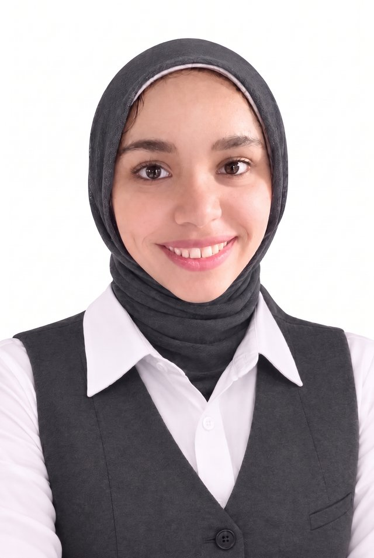
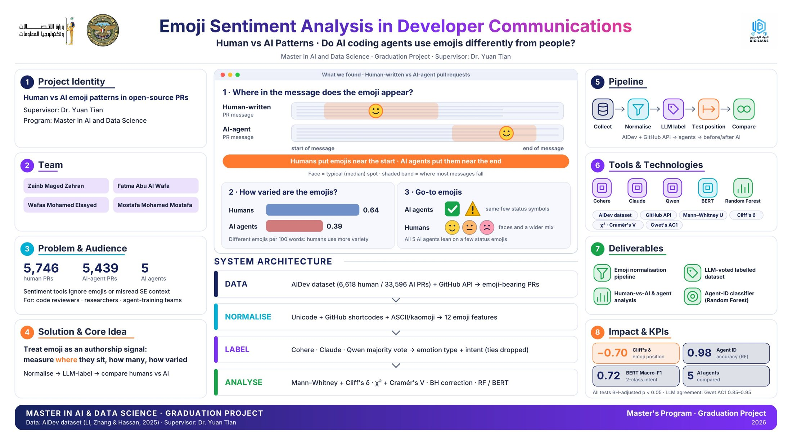
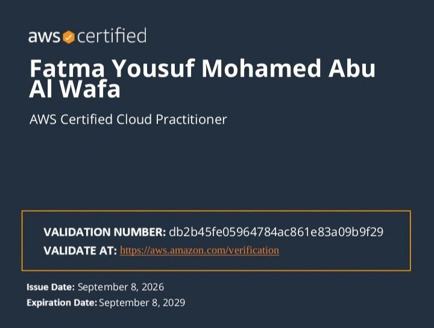
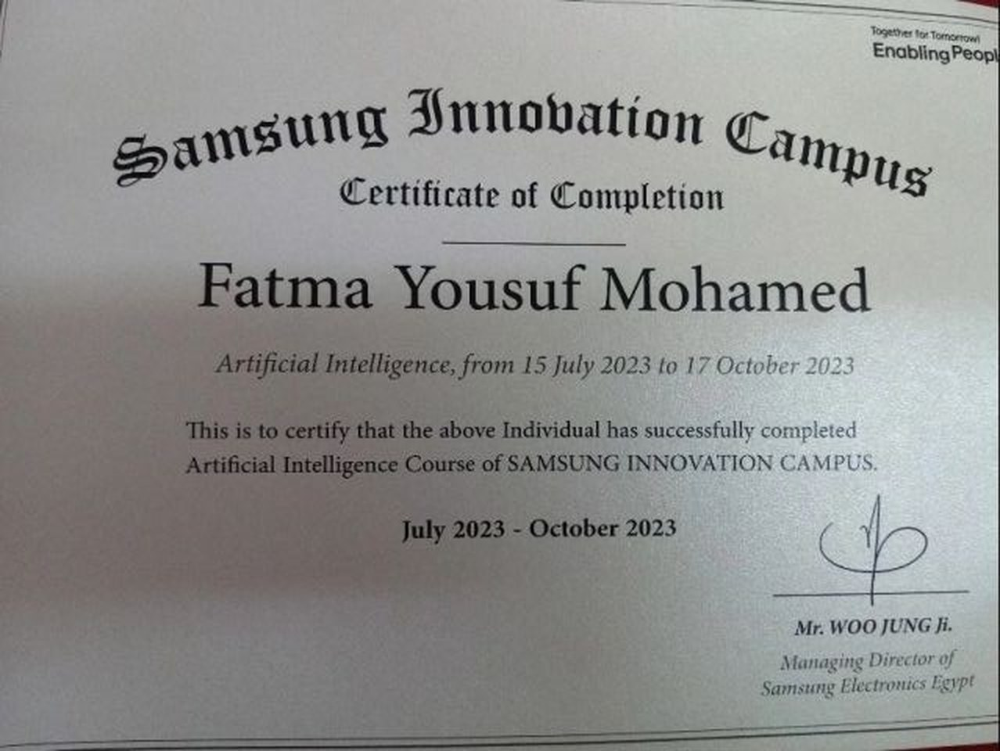
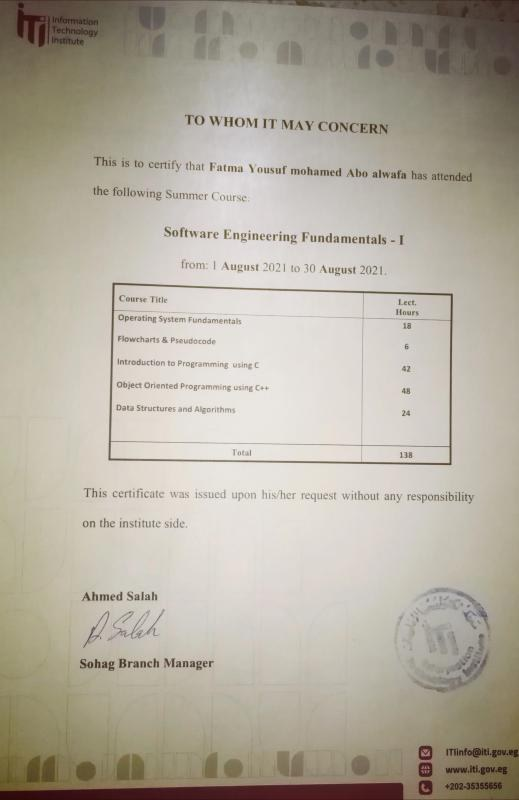

Hello, I’m
I build machine learning, NLP and LLM solutions, and I coach students to do the same. Master’s requirements completed at Queen’s University, based in Cairo and open to relocation and remote work.

Cairo, Egypt
AI Engineer and Data Scientist with freelance AI engineering experience since 2024.
Applied AI research, machine learning, NLP, LLMs and cloud-based solutions, from experiments to deployed prototypes.
M.Sc. Computing (Professional Master’s), Queen’s University: requirements completed October 2026, conferral expected Spring 2027. B.Sc. Computer Science and AI, Sohag University, GPA 3.4.
Arabic (native) and English (fluent, academic and professional).
Emoji Sentiment Analysis in Developer Communications: Human vs AI Patterns. Supervisor Dr. Yuan Tian, with industry mentorship from Deloitte.

Click to zoomDo AI coding agents use emojis differently from people? We normalised emojis, labelled them with Cohere, Claude and Qwen voting, and compared 5,746 human and 5,439 AI-agent pull requests.
Choose a category to explore my toolkit.
Select a role to read more.
Conducting research on large language models and autonomous AI agents, focusing on agent behavior, failure patterns and techniques that improve reliability. Status: ongoing.
Research project: A Survey for LLM Agent Trajectory Analysis: From Failure Attribution to Enhancement (manuscript in preparation, not yet submitted or published).
• Investigating LLM agent architectures, reasoning, tool use and memory mechanisms.
• Analyzing agent trajectories to understand failure modes and their underlying causes.
• Conducting a structured literature review on agent evaluation and improvement.
• Contributing to the preparation of the survey manuscript.
Group study of emoji usage in human- and AI-authored pull requests using the AIDev dataset, applying NLP, statistical analysis and model evaluation, with industry mentorship from Deloitte.
Predictive modeling, NLP, RAG-based applications and LLM-enabled workflows, with Python data processing, model evaluation and application prototypes.
Coaching 200+ students in applied projects, problem-solving and freelancing on Upwork, Mostaql, Khamsat and Nafesly.
Taught 116+ students Python, exploratory data analysis, visualization and machine learning, and guided 45+ children in Scratch game design.
DEPI AI Intern (LLM fine-tuning, prompt engineering), Udacity DECI Student Guide for 100+ students, and Samsung Innovation Campus, where I ranked first.
Filter by focus area.
Verified credentials and rankings.

Click to zoomIssued September 2026, valid until September 2029.
View badge
Click to zoomAI course certificate, July to October 2023. Ranked first in the program.
View certificate
Click to zoomITI Sohag summer course, August 2021, 138 hours: C and C++, OOP, data structures and operating systems.
Open to relocation and remote work. Reach me directly or find my work on these profiles.